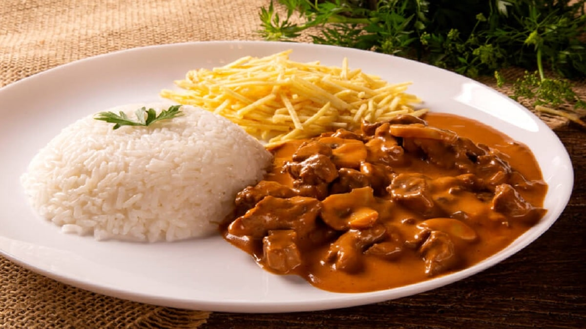

Strogonoff

Description
Growing up in Brazil, I was surrounded by traditional dishes that were staples of our everyday meals. One of the most common house-made dishes we enjoyed during the week was the 'strogonoff', which, though originally from Russia, is a very common recipe in Brazil, specially in my state. Its easy preparation and delicious taste made it a go-to dish, reflecting the warmth and simplicity of Brazilian home cooking.
Ingredients
- 500 grams of sirloin, cut into strips
- 1/4 cup of butter
- 1 chopped onion
- 1 tablespoon of mustard
- 1 tablespoon of ketchup
- A pinch of black pepper
- 1 peeled and chopped tomato
- 1 cup of sliced champignon mushrooms
- 300 grams of heavy cream
- Chopped parsley and salt to taste
Preparation Method
- In a pan, heat 1/4 cup of butter.
- Add the sirloin strips to the pan and season with salt to taste.
- Add ground black pepper to taste.
- Let the meat brown for 2 minutes without stirring to keep the juices.
- Add 1 tablespoon of mustard and 1 tablespoon of ketchup.
- Next, add 1 peeled and chopped tomato to the sauté.
- Also, add 1 chopped onion.
- Stir and let it sauté well.
- Add 1 cup of sliced champignon mushrooms and sauté a bit more.
- Add 300 grams of heavy cream, mix, and let it cook for another 2 minutes.
- When serving, sprinkle chopped parsley to taste on top of the beef stroganoff.